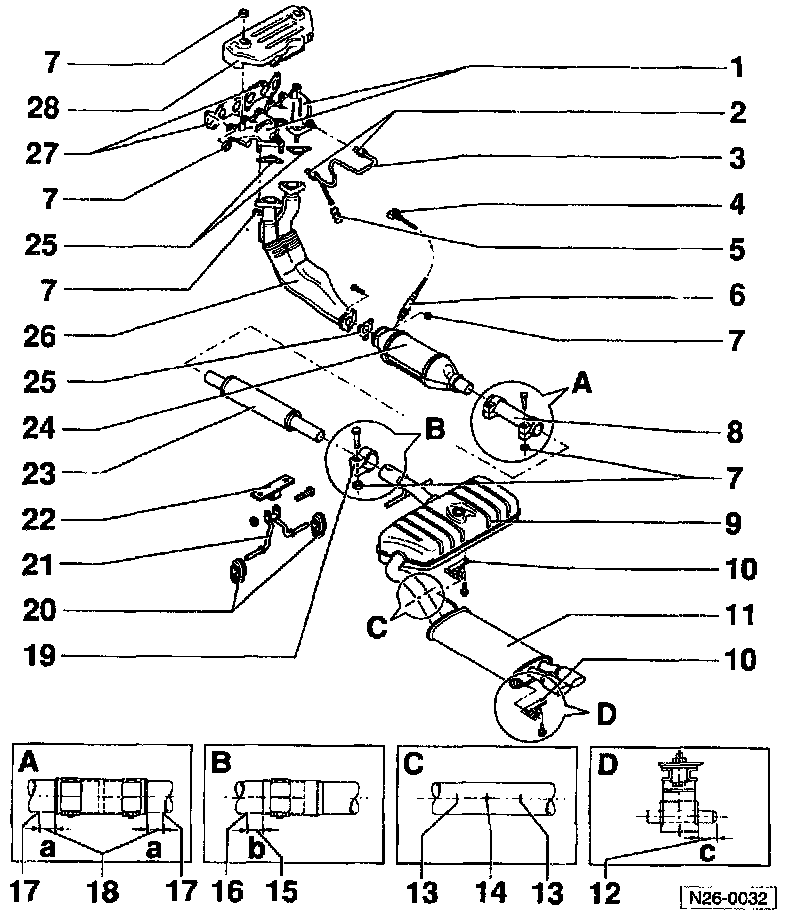

Catalytic Converter: Service and Repair

1. Exhaust manifold
- 2-part.
2. 25 Nm (18 ft lb)
3. CO tap tube
- Where applicable.
4. Connector
- 4-pin.
- For Heated Oxygen Sensor (HO2S).
- Secured to right rear assembly mounting.
- Check HO2S basic voltage.
5. Sealing cap
6. Heated Oxygen Sensor (HO2S) (G39)
- Tightening torque: 50 Nm (37 ft lb).
- Apply "G5" to threads only.
- "G5" must NOT get into slots on probe body.
7. Nuts, M8 or M10
- Always replace.
- Tightening torques:
M8: 25 Nm (18 ft lb).
M10: 40 Nm (30 ft lb).
8. Double clamp
9. Center silencer
10. Mounting
11. Rear silencer
12. Dimension -c-
- Approx. 10 mm (0.39 in.).
13. Marking
- For double clamp.
- Three places on circumference.
- Distance from double clamp to marking See dimension -a-, item -18-.
14. Separation point
- For repair of individual parts.
- When replacing the center silencer item -9-.
- Three places on circumference of connecting pipe.
- In production center and rear silencers are one unit. For repair, center and rear silencers are supplied individually, with a double clamp for connection.
- Cut through connecting pipe at right angle to pipe, at separation point, using body saw, VAG 1523 or equivalent.
15. Dimension -b-
- Approx. 5 mm (0.20 in.).
16. Marking
- Three places on circumference
17. Marking
- Three places on circumference.
- "S" = Manual transmission.
- "A" = Automatic transmission.
18. Dimension -a-
- Approx. 5 mm (0.20 in.).
19. Clamp
20. Support
21. Mounting
- Note installation position.
22. Lifting eye
23. Front silencer
24. Three Way Catalytic Converter (TWC)
25. Gasket
- Always replace.
26. Front exhaust pipe
- Exhaust pipe cooling.
27. Gasket
- 2 piece.
- Always replace.
28. Heat shield